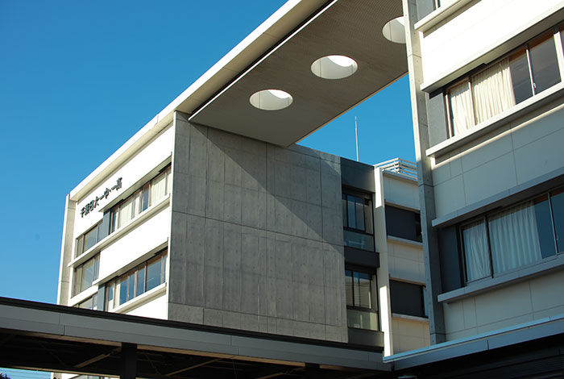
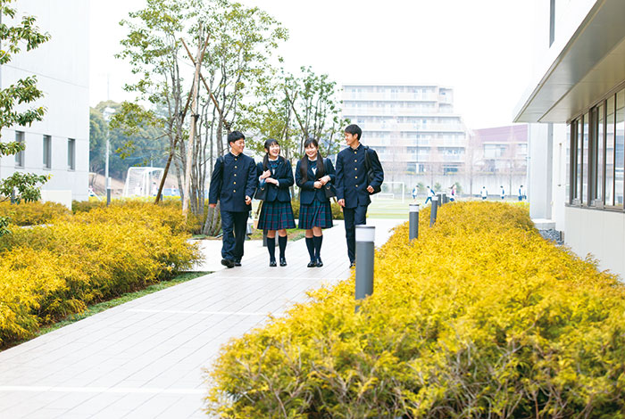
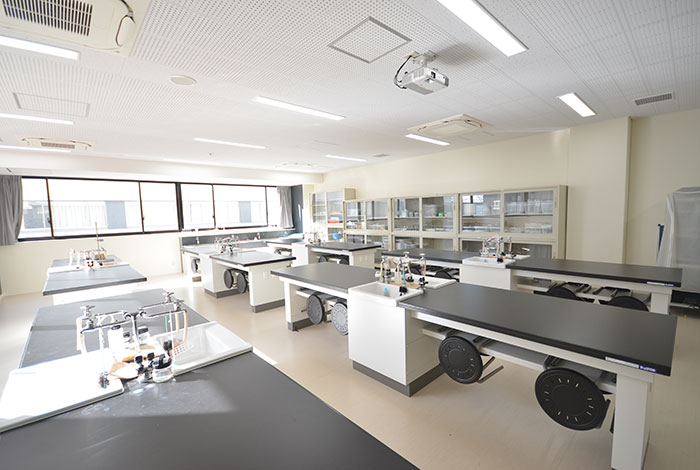
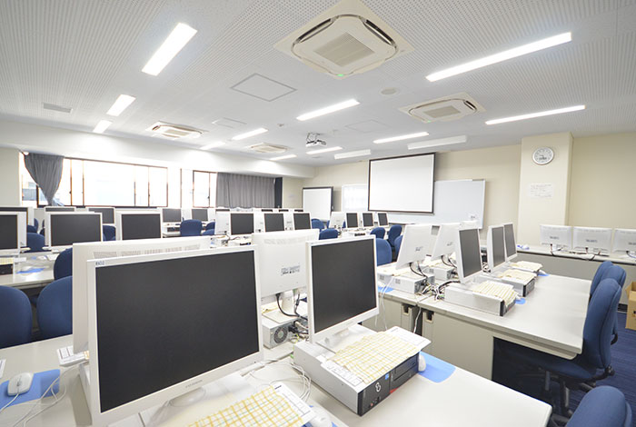
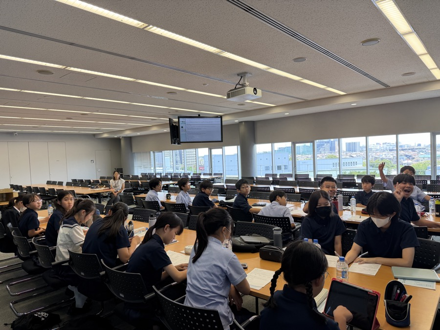

真・健・和
校訓
徒歩12分
船橋日大前駅から
習陵祭
体育祭と文化祭
School Highlights
千葉日大一中の魅力は、緑のキャンパスから始まる。
Real Photos
本物のキャンパスを写真で見てみよう。
校舎の光の道や実験室など、千葉日大一中の学びの環境を公式サイトの写真で紹介します。





写真出典：千葉日本大学第一中学・高等学校 公式サイト「中学棟・高校棟」（デモ掲載）／理工学部訪問の写真は当日撮影
School Motto
千葉日大一中の3つの言葉
真・健・和
まっ直ぐに、すこやかに、なごやかに。毎日の合言葉です。
Learning Style
6年間でじっくり育てる、千葉日大一中の学び。
中高一貫だからできる、基礎から積み上げる学習。日本大学との連携で、将来の学びにも早くから触れられます。
学び
中高一貫
連携
日大連携
行事
習陵祭
School Life
千葉日大一中の学びと生活
Events
一年を動かす行事
Route Start
通学路は船橋日大前駅から。
東葉高速線の船橋日大前駅から千葉日大一中までは徒歩約12分。日本大学理工学部の キャンパスを通り抜ける、緑いっぱいの通学路です。次のゲームでは、この駅を スタート地点にして学校までの道のりをたどります。
電車
船橋日大前駅から徒歩約12分
電車
習志野駅から徒歩約20分
バス
北習志野駅からバスも利用可
Mini Game
キャンパスルートダッシュ
船橋日大前駅から日大理工キャンパスの緑の中を抜けて、千葉日大一中へ向かうミニゲームです。
Score
0
Best
0